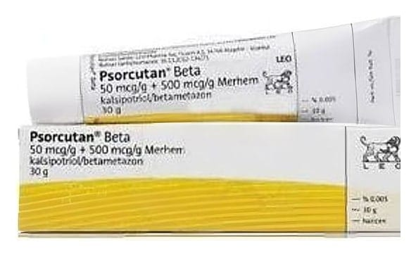

Psorcutan Beta 50 mcg/g + 500 mcg/g Merhem , 30 g

Ne için kullanılır
KT · Bölüm 1PSORCUTAN®BETA kalsipotriol (D vitamini ne be nz er bir madde) ve betametazon (bi r steroi d) etki n maddelerini içerir. Kalsipotriol de ri hücrelerini n büyüme or anının normale dönmelerini sağlar. Bir kortikos teroi d ol an betametazon iltihabın (enf lamasyon) azalmasını sağlar (ba zı vüc ut geliştiri ciler ve atletler tarafından ha talı bi r şekilde kullanılan ana bolik steroi dl erle karıştırılmamalıdır).
PSORCUTAN®BETA sede f ha stalığının (psoriasis vulgaris) tedavisi için kullanılır. Sedef ha stalığı, de ri hücreleri çok hızlı çoğalmaya başladı ğı zaman ol uşur . Bu, kızarıklık, pullanma ve derini n kalınlaşmasına ne den ol ur .
PSORCUTAN®BETA sede f hastalığının be lirtilerini tedavi eder ve hızla çoğalan derideki hücrelerin normale dönmesine yardımcı ol ur .
PSORCUTAN®BETA'nın ambalaj büyüklüğü 30 g'dır ve 1 g PSORCUTAN®BETA, 0.05 mg
kalsipotriol (hidrat olarak) ve 0.5 mg betametazon (dipropiyonat olarak) içerir.